토목기사 (2020-06-06 기출문제)
1과목: 응용역학
1. 다음 그림과 같은 보에서 B 지점의 반력이 2P가 되기 위한 b/a는?
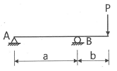
- 0.75
- 1.00
- 1.25
- 1.50
(정답률: 71%)

2. 그림의 트러스에서 수직 부재 V의 부재력은?
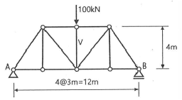
- 100kN(인장)
- 100kN(압축)
- 50kN(인장)
- 50kN(압축)
(정답률: 67%)
3. 그림과 같은 구조물에 하중 W가 작용할 때 P의 크기는? (단, 0° < α < 180°이다.)
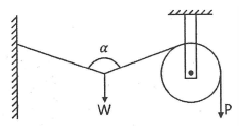
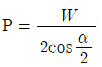
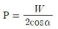
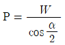
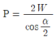
(정답률: 65%)
4. 탄성계수(E)가 2.1×105MPa, 푸아송 비(ν)가 0.25일 때 전단탄성계수(G)의 값은?
- 8.4×104MPa
- 9.8×104MPa
- 1.7×106MPa
- 2.1×106MPa
(정답률: 72%)
5. 그림과 같은 단순보의 단면에서 최대 전단응력은?
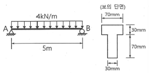
- 2.47MPa
- 2.96MPa
- 3.64MPa
- 4.95MPa
(정답률: 44%)
6. 길이 5m의 철근을 200MPa의 인장응력으로 인장하였더니 그 길이가 5mm만큼 늘어났다고 한다. 이 철근의 탄성계수는? (단, 철근의 지름은 20mm이다.)
- 2×104MPa
- 2×105MPa
- 6.37×104MPa
- 6.37×105MPa
(정답률: 50%)
7. 그림과 같은 부정정보에 집중하중 50kN이 작용할 때 A점의 휨모멘트(MA)는?
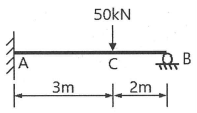
- -26kN ‧ m
- -36kN ‧ m
- -42kN ‧ m
- -57kN ‧ m
(정답률: 49%)
8. 단순보에서 그림과 같이 하중 P가 작용할 때 보의 중앙점의 단면 하단에 생기는 수직응력의 값은? (단, 보의 단면에서 높이는 h, 폭은 b이다.)
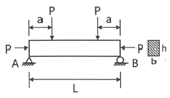
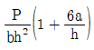
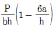
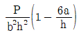
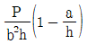
(정답률: 49%)
9. 아래 그림과 같은 게르버 보에서 E점의 휨모멘트 값은?
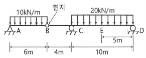
- 190kN ‧ m
- 240kN ‧ m
- 310kN ‧ m
- 710kN ‧ m
(정답률: 51%)
10. 양단고정의 장주에 중심축하중이 작용할 때 이 기둥의 좌굴응력은? (단, E=2.1×105MPa이고, 기둥은 지름이 4cm인 원형기둥이다.)
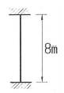
- 3.35MPa
- 6.72MPa
- 12.95MPa
- 25.91MPa
(정답률: 55%)
11. 휨모멘트를 받는 보의 탄성 에너지를 나타내는 식으로 옳은 것은?
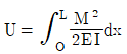
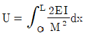
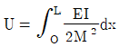
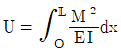
(정답률: 65%)
12. 그림과 같은 단순보에서 B단에 모멘트 하중 M이 작용할 때 경간 AB 중에서 수직 처짐이 최대가 되는 곳의 거리 X는? (단, EI는 일정하다.)
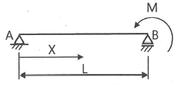
- 0.500L
- 0.577L
- 0.667L
- 0.750L
(정답률: 72%)
13. 아래 그림의 캔틸레버 보에서 C점, B점의 처짐비 (δC:δB)는? (단, EI는 일정하다.)
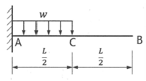
- 3 : 8
- 3 : 7
- 2 : 5
- 1 : 2
(정답률: 47%)
14. 그림과 같은 단면을 갖는 부재(A)와 부재(B)가 있다. 동일조건의 보에 사용하고 재료의 강도도 같다면, 휨에 대한 강성을 비교한 설명으로 옳은 것은? (문제 오류로 가답안 발표시 3번으로 발표되었지만 확정답안 발표시 모두 정답처리 되었습니다. 여기서는 가답안인 3번을 누르면 정답 처리 됩니다.)
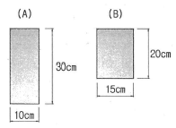
- 보(A)는 보(B) 보다 휨에 대한 강성이 2.0배 크다.
- 보(B)는 보(A) 보다 휨에 대한 강성이 2.0배 크다.
- 보(A)는 보(B) 보다 휨에 대한 강성이 1.5배 크다.
- 보(B)는 보(A) 보다 휨에 대한 강성이 1.5배 크다.
(정답률: 56%)
15. 그림과 같은 3힌지 아치에서 A지점의 반력은?
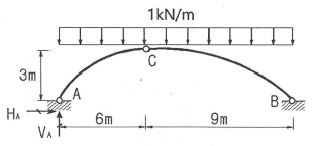
- VA=6.0kN(↑), HA=9.0kN(→)
- VA=6.0kN(↑), HA=12.0kN(→)
- VA=7.5kN(↑), HA=9.0kN(→)
- VA=7.5kN(↑), HA=12.0kN(→)
(정답률: 66%)
16. 길이가 L인 양단 고정보 AB의 왼쪽 지점이 그림과 같이 작은 각 θ만큼 회전할 때 생기는 반력(RA, MA)은? (단, EI는 일정하다.)
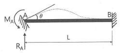
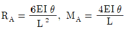
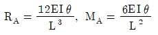
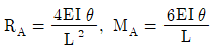
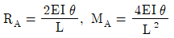
(정답률: 40%)
17. 반지름이 30cm인 원형단면을 가지는 단주에서 핵의 면적은 약 얼마인가?
- 44.2cm2
- 132.5cm2
- 176.7cm2
- 228.2cm2
(정답률: 56%)
18. 다음 중 정(+)의 값뿐만 아니라 부(-)의 값도 갖는 것은?
- 단면계수
- 단면 2차 반지름
- 단면 2차 모멘트
- 단면 상승 모멘트
(정답률: 73%)
19. 그림과 같은 삼각형 물체에 작용하는 힘 P1, P2를 AC면에 수직한 방향의 성분으로 변환할 경우 힘 p의 크기는?
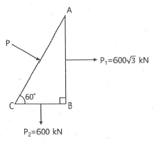
- 1000kN
- 1200kN
- 1400kN
- 1600kN
(정답률: 64%)
20. 지간 10m인 단순보 위를 1개의 집중하중 P=200kN이 통과할 때 이 보에 생기는 최대 전단력(S)과 최대휨모멘트(M)는?(오류 신고가 접수된 문제입니다. 반드시 정답과 해설을 확인하시기 바랍니다.)
- S=100kN, M=500kN ‧ m
- S=100kN, M=1000kN ‧ m
- S=200kN, M=500kN ‧ m
- S=200kN, M=1000kN ‧ m
(정답률: 54%)
2과목: 측량학
21. 종단측량과 횡단측량에 관한 설명으로 틀린 것은?
- 종단도를 보면 노선의 형태를 알 수 있으나 횡단도를 보면 알 수 없다.
- 종단측량은 횡단측량보다 높은 정확도가 요구된다.
- 종단도의 횡축척과 종축척은 서로 다르게 잡는 것이 일반적이다.
- 횡단측량은 노선의 종단측량에 앞서 실시한다.
(정답률: 50%)
22. 지표상 P점에서 9km 떨어진 Q점을 관측할 때 Q점에 세워야 할 측표의 최소 높이는? (단, 지구 반지름 R=6370km이고, P, Q점은 수평면상에 존재한다.)
- 10.2m
- 6.4m
- 2.5m
- 0.6m
(정답률: 59%)
23. 위성측량의 DOP(Dilution of Precision)에 관한 설명으로 옳지 않은 것은?
- DOP는 위성의 기하학적 분포에 따른 오차이다.
- 일반적으로 위성들 간의 공간이 더 크면 위치정밀도가 낮아진다.
- DOP를 이용하여 실제 측량 전에 위성측량의 정확도를 예측할 수 있다.
- DOP 값이 클수록 정확도가 좋지 않은 상태이다.
(정답률: 42%)
24. 캔트(cant)의 계산에서 속도 및 반지름을 2배로 하면 캔트는 몇 배가 되는가?
- 2배
- 4배
- 8배
- 16배
(정답률: 69%)
25. 한 측선의 자오선(종축)과 이루는 각이 60°00′이고 계산된 측선의 위거가 -60m, 경거가 -103.92m일 때 이 측선의 방위와 거리는?
- 방위=S60°00′ E, 거리=130m
- 방위=N60°00′ E, 거리=130m
- 방위=N60°00′ W, 거리=120m
- 방위=S60°00′ W, 거리=120m
(정답률: 47%)
26. 종단점법에 의한 등고선 관측방법을 사용하는 가장 적당한 경우는?
- 정확한 토량을 산출할 때
- 지형이 복잡할 때
- 비교적 소축척으로 산지 등의 지형측량을 행할 때
- 정밀한 등고선을 구하려 할 때
(정답률: 52%)
27. 삼각측량을 위한 삼각망 중에서 유심다각망에 대한 설명으로 틀린 것은?
- 농지측량에 많이 사용된다.
- 방대한 지역의 측량에 적합하다.
- 삼각망 중에서 정확도가 가장 높다.
- 동일측점 수에 비하여 포함면적이 가장 넓다.
(정답률: 68%)
28. 그림과 같은 토지의
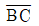
에 평행한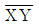
로 m:n=1:2.5의 비율로 면적을 분할하고자 한다.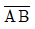
=35m일 때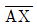
는?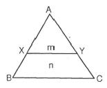
- 17.7m
- 18.1m
- 18.7m
- 19.1m
(정답률: 50%)
29. 종중복도 60%, 횡중복도 20%일 때 촬영종기선의 길이와 촬영횡기선 길이의 비는?
- 1 : 2
- 1 : 3
- 2 : 3
- 3 : 1
(정답률: 50%)
30. 트래버스 측량에서 거리 관측의 오차가 관측거리 100m에 대하여 ±1.0mm인 경우 이에 상응하는 각관측 오차는?
- ±1.1″
- ±2.1″
- ±3.1″
- ±4.1″
(정답률: 58%)
31. 지형도의 이용법에 해당되지 않는 것은?
- 저수량 및 토공량 산정
- 유역면적의 도상 측정
- 직접적인 지적도 작성
- 등경사선 관측
(정답률: 56%)
32. 노선측량에서 단곡선의 설치방법에 대한 설명으로 옳지 않은 것은?
- 중앙종거를 이용한 설치방법은 터널 속이나 삼림지대에서 벌목량이 많을 때 사용하면 편리하다.
- 편각설치법은 비교적 높은 정확도로 인해 고속도로나 철도에 사용할 수 있다.
- 접선편거와 현편거에 의하여 설치하는 방법은 줄자만을 사용하여 원곡선을 설치할 수 있다.
- 장현에 대한 종거와 횡거에 의하는 방법은 곡률반지름이 짧은 곡선일 때 편리하다.
(정답률: 46%)
33. 그림과 같이 수준측량을 실시하였다. A점의 표고는 300m이고, B와 C구간은 교호 수준 측량을 실시하였다면, D점의 표고는? (표고차 : A→B=+1.233m, B→C=+0.726m, C→B=-0.720m, C→D=-0.926m)
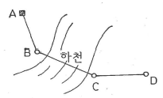
- 300.310m
- 301.030m
- 302.153m
- 302.882m
(정답률: 58%)
34. 삼변측량에서 ΔABC에서 세변의 길이가 a=1200.00m, b=1600.00m, c=1442.22m라면 변 c의 대각인 ∠C는?
- 45°
- 60°
- 75°
- 90°
(정답률: 61%)
35. 중력이상에 대한 설명으로 옳지 않은 것은?
- 중력이상에 의해 지표면 밑의 상태를 추정할 수 있다.
- 중력이상에 대한 취급은 물리학적 측지학에 속한다.
- 중력이상이 양(+)이면 그 지점 부근에 무거운 물질이 있는 것으로 추정할 수 있다.
- 중력식에 의한 계산값에서 실측값을 뺀 것이 중력이상이다.
(정답률: 53%)
36. 초점거리 210mm의 카메라로 지면의 비고가 15m인 구릉지에서 촬영한 연직사진의 축척이 1 : 5000이었다. 이 사진에서 비고에 의한 최대변위량은? (단, 사진의 크기는 24cm×24cm이다.)
- ±1.2mm
- ±2.4mm
- ±3.8mm
- ±4.6mm
(정답률: 42%)
37. 아래 종단수준측량의 야장에서 ㉠, ㉡, ㉢에 들어갈 값으로 옳은 것은?
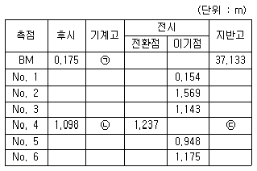
- ㉠ : 37.308, ㉡ : 37.169 ㉢ : 36.071
- ㉠ : 37.308, ㉡ : 36.071 ㉢ : 37.169
- ㉠ : 36.958, ㉡ : 35.860 ㉢ : 37.097
- ㉠ : 36.958, ㉡ : 37.097 ㉢ : 35.860
(정답률: 41%)
38. 종단곡선에 대한 설명으로 옳지 않은 것은?
- 철도에서는 원곡선을 도로에서는 2차포물선을 주로 사용한다.
- 종단경사는 환경적, 경제적 측면에서 허용할 수 있는 범위 내에서 최대한 완만하게 한다.
- 설계속도와 지형 조건에 따라 종단경사의 기준값이 제시되어 있다.
- 지형의 상황, 주변 지장물 등의 한계가 있는 경우 10%정도 증감이 가능하다.
(정답률: 47%)
39. 트래버스 측량에서 선점시 주의하여야 할 사항이 아닌 것은?
- 트래버스의 노선은 가능한 폐합 또는 결합이 되게 한다.
- 결합 트래버스의 출발점과 결합점간의 거리는 가능한 단거리로 한다.
- 거리측량과 각측량의 정확도가 균형을 이루게 한다.
- 측점간 거리는 다양하게 선점하여 부정오차를 소거한다.
(정답률: 55%)
40. 토량 계산공식 중 양단면의 면적차가 클 때 산출된 토량의 일반적인 대소 관계로 옳은 것은? (단, 중앙단면법 : A, 양단면평균법 : B, 각주공식 : C)
- A = C ＜ B
- A ＜ C = B
- A ＜ C ＜ B
- A ＞ C ＞ B
(정답률: 54%)
3과목: 수리학 및 수문학
41. 밑변 2m, 높이 3m인 삼각형 형상의 판이 밑변을 수면과 맞대고 연직으로 수중에 있다. 이 삼각형 판의 작용점위치는? (단, 수면을 기준으로 한다.)
- 1m
- 1.33m
- 1.5m
- 2m
(정답률: 32%)
42. 시간을 t, 유속을 v , 두 단면간의 거리를 ℓ이라 할 때, 다음 조건 중 부등류인 경우는? (문제 오류로 실제 시험에서는 모두 정답처리 되었습니다. 여기서는 1번을 누르면 정답 처리 됩니다.)
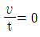
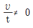
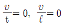
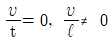
(정답률: 56%)
43. 강우로 인한 유수가 그 유역 내의 가장 먼 지점으로부터 유역출구까지 도달하는데 소요되는 시간을 의미하는 것은?
- 기저시간
- 도달시간
- 지체시간
- 강우지속시간
(정답률: 64%)
44. 지하의 사질 여과층에서 수두차가 0.5m이며 투과거리가 2.5m일 때 이곳을 통과하는 지하수의 유속은? (단, 투수계수는 0.3cm/s이다.)
- 0.03cm/s
- 0.04cm/s
- 0.⑤cm/s
- 0.06cm/s
(정답률: 56%)
45. 관망계산에 대한 설명으로 틀린 것은?
- 관망은 Hardy-Cross 방법으로 근사계산할 수 있다.
- 관망계산 시 각 관에서의 유량을 임의로 가정해도 결과는 같아진다.
- 관망계산에서 반시계방향과 시계방향으로 흐를 때의 마찰 손실수두의 합은 0이라고 가정한다.
- 관망계산 시 극히 작은 손실의 무시로도 결과에 큰 차를 가져올 수 있으므로 무시하여서는 안 된다.
(정답률: 50%)
46. 다음 중 밀도를 나타내는 차원은?
- [FL-4T2]
- [FL4T-2]
- [FL-2T4]
- [FL-2T-4]
(정답률: 46%)
47. 지하수 흐름에서 Darcy 법칙에 관한 설명으로 옳은 것은?
- 정상 상태이면 난류영역에서도 적용된다.
- 투수계수(수리전도계수)는 지하수의 특성과 관계가 있다.
- 대수층의 모세관 작용은 이 공식에 간접적으로 반영되었다.
- Darcy 공식에 의한 유속은 공극 내 실제유속의 평균치를 나타낸다.
(정답률: 45%)
48. 일반적인 수로단면에서 단면계수 Zc와 수심 h의 상관식은 Zc2=ChM으로 표시할 수 있는데 이 식에서 M은?
- 단면지수
- 수리지수
- 윤변지수
- 흐름지수
(정답률: 39%)
49. 오리피스(orifice)로부터의 유량을 측정한 경우 수두 H를 추정함에 1%의 오차가 있었다면 유량 Q에는 몇 %의 오차가 생기는가?
- 1%
- 0.5%
- 1.5%
- 2%
(정답률: 50%)
50. 강우 강도
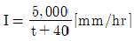
로 표시되는 어느 도시에 있어서 20분간의 강유량 R20은? (단, t의 단위는 분이다.)- 17.8mm
- 27.8mm
- 37.8mm
- 47.8mm
(정답률: 59%)
51. 광정 위어(weir)의 유량공식 Q=1.704CbH3/2에 사용되는 수두(H)는?
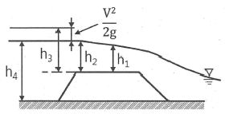
- h1
- h2
- h3
- h4
(정답률: 52%)
52. 유체의 흐름에 대한 설명으로 옳지 않은 것은?
- 이상유체에서 점성은 무시된다.
- 유관(stream tube)은 유선으로 구성된 가상적인 관이다.
- 점성이 있는 유체가 계속해서 흐르기 위해서는 가속도가 필요하다.
- 정상류의 흐름상태는 위치변화에 따라 변화하지 않는 흐름을 의미한다.
(정답률: 53%)
53. 주어진 유량에 대한 비에너지(specific energy)가 3m일 때, 한계수심은?
- 1m
- 1.5m
- 2m
- 2.5m
(정답률: 60%)
54. 강우강도 공식에 관한 설명으로 틀린 것은?
- 자기우랑계의 우량자료로부터 결정되며, 지역에 무관하게 적용 가능하다.
- 도시지역의 우수관로, 고속도로 암거 등의 설계 시 기본 자료로서 널리 이용된다.
- 강우강도가 커질수록 강우가 계속되는 시간은 일반적으로 작아지는 반비례 관계이다.
- 강우강도(I)와 강우지속시간(D)과의 관계로서 Talbot, Sherman, Japanese형의 경험공식에 의해 표현될 수 있다.
(정답률: 61%)
55. 그림과 같이 지름 3m, 길이 8m인 수로의 드럼게이트에 작용하는 전수압이 수문
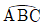
에 작용하는 지점의 수심은?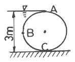
- 2.00m
- 2.25m
- 2.43m
- 2.68m
(정답률: 35%)
56. 그림과 같이 A에서 분기했다가 B에서 다시 합류하는 관수로에 물이 흐를 때 관Ⅰ과 Ⅱ의 손실수두에 대한 설명으로 옳은 것은? (단, 관Ⅰ의 지름 ＜ 관Ⅱ의 지름이며, 관의 성질은 같다.)
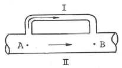
- 관Ⅰ의 손실수두가 크다.
- 관Ⅱ의 손실수두가 크다.
- 관Ⅰ과 관Ⅱ의 손실수두는 같다.
- 관Ⅰ과 관Ⅱ의 손실수두의 합은 0 이다.
(정답률: 59%)
57. 토리첼리(Torricelli) 정리는 다음 중 어느 것을 이용하여 유도할 수 있는가?
- 파스칼 원리
- 아르키메데스 원리
- 레이놀즈 원리
- 베르누이 정리
(정답률: 60%)
58. 유역면적 20km2 지역에서 수공구조물의 축조를 위해 다음 아래의 수문곡선을 얻었을 때, 총 유출량은?
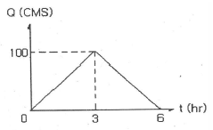
- 108m3
- 108×104m3
- 300m3
- 300×104m3
(정답률: 40%)
59. 다음 그림과 같은 사다리꼴 수로에서 수리상 유리한 단면으로 설계된 경우의 조건은?
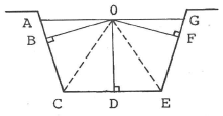
- OB=OD=OF
- OA=OD=OG
- OC=OG+OA=OE
- OA=OC=OE=OG
(정답률: 46%)
60. 평면상 x, y방향의 속도성분이 각각 u=ky, v=kx인 유선의 형태는?
- 원
- 타원
- 쌍곡선
- 포물선
(정답률: 45%)
4과목: 철근콘크리트 및 강구조
61. 콘크리트의 설계기준압축강도(fck)가 50MPa인 경우 콘크리트 탄성계수 및 크리프 계산에 적용되는 콘크리트의 평균 압축강도(fcu)는?
- 54MPa
- 55MPa
- 56MPa
- 57MPa
(정답률: 53%)
62. 프리스트레스트 콘크리트의 경우 흙에 접하여 콘크리트를 친 후 영구히 흙에 묻혀 있는 콘크리트의 최소 피복두께는?(2021년 개정된 규정 적용됨)
- 45mm
- 65mm
- 75mm
- 1⑤mm
(정답률: 56%)
63. 2방향 슬래브의 직접설계법을 적용하기 위한 제한사항으로 틀린 것은?
- 각 방향으로 3경간 이상이 연속되어야 한다.
- 슬래브 판들은 단변 경간에 대한 장변 경간의 비가 2이하인 직사각형이어야 한다.
- 모든 하중은 슬래브 판 전체에 걸쳐 등분포된 연직하중이어야 한다.
- 연속한 기둥 중심선을 기준으로 기둥의 어긋남은 그 방향 경간의 최대 20%까지 허용할 수 있다.
(정답률: 61%)
64. 경간이 8m인 PSC보에 계수등분포하중(ω)이 20kN/m 작용할 때 중앙 단면 콘크리트 하연에서의 응력이 0이되려면 강재에 줄 프리스트레스 힘(P)은? (단, PS강재는 콘크리트 도심에 배치되어 있다.)
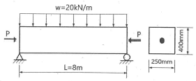
- P=2000kN
- P=2200kN
- P=2400kN
- P=2600kN
(정답률: 55%)
65. 철근콘크리트 구조물에서 연속 휨부재의 모멘트 재분배를 하는 방법에 대한 설명으로 틀린 것은?
- 근사해법에 의하여 휨모멘트를 계산한 경우에는 연속 휨부재의 모멘트 재분배를 할 수 없다.
- 어떠한 가정의 하중을 적용하여 탄성이론에 의하여 산정한 연속 휨부재 받침부의 부모멘트는 10% 이내에서 800εt% 만큼 증가 또는 감소시킬 수 있다.
- 경간 내의 단면에 대한 휨모멘트의 계산은 수정된 부모멘트를 사용하여야 한다.
- 휨모멘트를 감소시킬 단면에서 최외단 인장철근의 순인 장변형률 εt가 0.0075 이상인 경우에만 가능하다.
(정답률: 45%)
66. 복전단 고장력 볼트(bolt)의 마찰이음에서 강판에 P=350kN이 작용할 때 볼트의 수는 최소 몇 개가 필요한가? (단, 볼트의 지름(d)은 20mm이고, 허용전단응력(τa)은 120MPa이다.)
- 3개
- 5개
- 8개
- 10개
(정답률: 34%)
67. 부재의 순단면적을 계산할 경우 지름 22mm의 리벳을 사용하였을 때 리벳 구멍의 지름은 얼마인가? (단, 강구조 연결 설계기준(허용응력설계법)을 적용한다.)
- 21.5mm
- 22.5mm
- 23.5mm
- 24.5mm
(정답률: 41%)
68. 단철근 직사각형 보에서 설계기준압축강도 fck=58MPa일 때 계수 β1은? (단, 등가 직사각응력블록의 깊이 a=β1c이다.)
- 0.78
- 0.72
- 0.65
- 0.64
(정답률: 47%)
69. 인장철근의 겹침이음에 대한 설명으로 틀린 것은?
- 다발철근의 겹침이음은 다발 내의 개개철근에 대한 겹침이음길이를 기본으로 결정되어야 한다.
- 어떤 경우이든 300mm 이상 겹침이음한다.
- 겹침이음에는 A급, B급 이음이 있다.
- 겹침이음된 철근량이 전체 철근량의 1/2 이하인 경우는 B급이음이다.
(정답률: 49%)
70. 아래 그림과 같은 보의 단면에서 표피철근의 간격 s는 약 얼마인가? (단, 습윤환경에 노출되는 경우로서, 표피철근의 표면에서 부재 측면까지 최단거리(cc)는 50mm, fck=28MPa, fy=400MPa이다.)
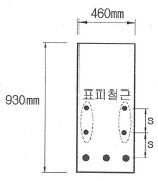
- 170mm
- 200mm
- 230mm
- 260mm
(정답률: 42%)
71. 강판을 그림과 같이 용접 이음할 때 용접부의 응력은?
- 110MPa
- 125MPa
- 250MPa
- 722MPa
(정답률: 69%)
72. 아래에서 설명하는 부재 형태의 최대 허용처짐은? (단, ℓ은 부재 길이이다.)
- ℓ/180
- ℓ/240
- ℓ/360
- ℓ/480
(정답률: 39%)
73. 아래 그림과 같은 직사각형 보를 강도설계이론으로 해석할 때 콘크리트의 등가사각형 깊이 a는? (단, fck=21MPa, fy=300MPa이다.)
- 109.9mm
- 121.6mm
- 129.9mm
- 190.5mm
(정답률: 55%)
74. 유효깊이(d)가 910mm인 아래 그림과 같은 단철근 T형보의 설계휨강도(øMn)를 구하면? (단, 인장철근량(As)은 7652mm2, fck=21MPa, fy=350MPa, 인장지배단면으로 ø=0.85, 경간은 3040mm이다.)
- 1845kN ‧ m
- 1863kN ‧ m
- 1883kN ‧ m
- 1901kN ‧ m
(정답률: 50%)
75. 옹벽의 안정조건 중 전도에 대한 저항휨모멘트는 횡토압에 의한 전도모멘트의 최소 몇 배 이상이어야 하는가?
- 1.5배
- 2.0배
- 2.5배
- 3.0배
(정답률: 47%)
76. 콘크리트 구조물에서 비틀림에 대한 설계를 하려고 할 때, 계수비틀림모멘트(Tu)를 계산하는 방법에 대한 설명으로 틀린 것은?
- 균열에 의하여 내력의 재분배가 발생하여 비틀림 모멘트가 감소할 수 있는 부정정 구조물의 경우, 최대 계수비틀림모멘트를 감소시킬 수 있다.
- 철근콘크리트 부재에서, 받침부에서 d 이내에 위치한 단면은 d에서 계산된 Tu보다 작지 않은 비틀림모멘트에 대하여 설계하여야 한다.
- 프리스트레스콘크리트 부재에서, 받침부에서 d 이내에 위치한 단면을 설계할 때 d에서 계산된 Tu보다 작지 않은 비틀림모멘트에 대하여 설계하여야 한다.
- 정밀한 해석을 수행하지 않은 경우, 슬래브에 의해 전달되는 비틀림 하중은 전체 부재에 걸쳐 균등하게 분포하는 것으로 가정할 수 있다.
(정답률: 46%)
77. 그림과 같은 띠철근 기둥에서 띠철근의 최대 수직간격으로 적당한 것은? (단, D10의 공칭직경은 9.5mm, D32의 공칭직경은 31.8mm이다.)
- 456mm
- 472mm
- 500mm
- 509mm
(정답률: 54%)
78. bω=350mm, d=600mm인 단철근 직사각형 보에서 보통중량콘크리트가 부담할 수 있는 공칭전단강도(Vc)를 정밀식으로 구하면 약 얼마인가? (단, 전단력과 휨모멘트를 받는 부재이며, Vu=100kN, Mu=300kN ‧ m, ρω=0.016, fck=24MPa이다.)
- 164.2kN
- 171.5kN
- 176.4kN
- 182.7kN
(정답률: 35%)
79. As=3600mm2, As′1200mm2로 배근된 그림과 같은 복철근 보의 탄성처짐이 12mm라 할 때 5년 후 지속하중에 의해 유발되는 추가 장기처짐은 얼마인가?
- 6mm
- 12mm
- 18mm
- 36mm
(정답률: 56%)
80. 그림과 같은 2경간 연속보의 양단에서 PS강재를 긴장 할 때 단 A에서 중간 B까지의 근사법으로 구한 마찰에 의한 프리스트레스의 감소율은? (단, 각은 radian이며, 곡률마찰계수(μ)는 0.4, 파상마찰계수(k)는 0.0027이다.)
- 12.6%
- 18.2%
- 10.4%
- 15.8%
(정답률: 31%)
5과목: 토질 및 기초
81. 그림과 같은 점토지반에서 안전수(m)가 0.1인 경우 높이 5m의 사면에 있어서 안전율은?
- 1.0
- 1.25
- 1.50
- 2.0
(정답률: 33%)
82. 어떤 흙의 입경가적곡선에서 D10=0.⑤mm, D30=0.09mm, D60=0.15mm이었다. 균등계수(Cu)와 곡률계수(Cg)의 값은?
- 균등계수=1.7, 곡률계수=2.45
- 균등계수=2.4, 곡률계수=1.82
- 균등계수=3.0, 곡률계수=1.08
- 균등계수=3.5, 곡률계수=2.08
(정답률: 55%)
83. 얕은 기초에 대한 Terzaghi의 수정지지력 공식은 아래의 표와 같다. 4m×5m의 직사각형 기초를 사용할 경우 형상계수 α와 β의 값으로 옳은 것은?
- α=1.18, β=0.32
- α=1.24, β=0.42
- α=1.28, β=0.42
- α=1.32, β=0.38
(정답률: 44%)
84. 지표면에 설치된 2m×2m의 정사각형 기초에 100kN/m2의 등분포 하중이 작용하고 있을 때 5m 깊이에 있어서의 연직응력 증가량을 2 : 1 분포법으로 계산 한 값은?
- 0.83kN/m2
- 8.16kN/m2
- 19.75kN/m2
- 28.57kN/m2
(정답률: 44%)
85. 어느 모래층의 간극률이 35%, 비중이 2.66이다. 이 모래의 분사현상(Quick Sand)에 대한 한계동수경사는 얼마인가?
- 0.99
- 1.08
- 1.16
- 1.32
(정답률: 52%)
86. 100% 포화된 흐트러지지 않은 시료의 부피가 20cm3이고 질량이 36g이었다. 이 시료를 건조로에서 건조시킨 후의 질량이 24g일 때 간극비는 얼마인가?
- 1.36
- 1.50
- 1.62
- 1.70
(정답률: 38%)
87. 성토나 기초지반에 있어 특히 점성토의 압밀완료 후 추가 성토 시 단기 안정문제를 검토하고자 하는 경우 적용되는 시험법은?
- 비압밀 비배수시험
- 압밀 비배수시험
- 압밀 배수시험
- 일축압축시험
(정답률: 45%)
88. 평판 재하 실험에서 재하판의 크기에 의한 영향(scale effect)에 관한 설명으로 틀린 것은?
- 사질토 지반의 지지력은 재하판의 폭에 비례한다.
- 점토지반의 지지력은 재하판의 폭에 무관하다.
- 사질토 지반의 침하량은 재하판의 폭이 커지면 약간 커지기는 하지만 비례하는 정도는 아니다.
- 점토지반의 침하량은 재하판의 폭에 무관하다.
(정답률: 48%)
89. 압밀시험결과 시간-침하량 곡선에서 구할 수 없는 값은?
- 초기 압축비
- 압밀계수
- 1차 압밀비
- 선행압밀 압력
(정답률: 43%)
90. Paper drain 설계 시 Drain paper의 폭이 10cm, 두께가 0.3cm일 때 Drain paper의 등치환산원의 직경이 약 얼마이면 Sand drain과 동등한 값으로 볼 수 있는가? (단, 형상계수(a)는 0.75이다.)
- 5cm
- 8cm
- 10cm
- 15cm
(정답률: 43%)
91. 아래 그림과 같은 지반의 A점에서 전응력(σ), 간극수압(u), 유효응력(σ′)을 구하면? (단, 물의 단위중량은 9.81kN/m3이다.)
- σ=100kN/m2, u=9.8kN/m2, σ′=90.2kN/m2
- σ=100kN/m2, u=29.4kN/m2, σ′=70.6kN/m2
- σ=120kN/m2, u=19.6kN/m2, σ′=100.4kN/m2
- σ=120kN/m2, u=39.2kN/m2, σ′=80.8kN/m2
(정답률: 60%)
92. 사운딩(Sounding)의 종류에서 사질토에 가장 적합하고 점성토에서도 쓰이는 시험법은?
- 표준 관입 시험
- 베인 전단 시험
- 더치 콘 관입 시험
- 이스키미터(Iskymeter)
(정답률: 52%)
93. 말뚝 지지력에 관한 여러 가지 공식 중 정역학적 지지력 공식이 아닌 것은?
- Dör의 공식
- Terzaghi의 공식
- Meyerhof의 공식
- Engineering news 공식
(정답률: 60%)
94. 흙의 다짐에 대한 설명으로 틀린 것은?
- 최적함수비로 다질 때 흙의 건조밀도는 최대가 된다.
- 최대건조밀도는 점성토에 비해 사질토일수록 크다.
- 최적함수비는 점성토일수록 작다.
- 점성토일수록 다짐곡선은 완만하다.
(정답률: 41%)
95. 흙의 투수성에서 사용되는 Darcy의 법칙 에 대한 설명으로 틀린 것은?
- Δh는 수두차이다.
- 투수계수(k)의 차원은 속도의 차원(cm/s)과 같다.
- A는 실제로 물이 통하는 공극부분의 단면적이다.
- 물의 흐름이 난류인 경우에는 Darcy의 법칙이 성립하지 않는다.
(정답률: 46%)
96. 그림에서 A점 흙의 강도정수가 c′=30kN/m2, ø′=30°일 때, A점에서의 전단강도는? (단, 물의 단위중량은 9.81kN/m3이다.)
- 69.31kN/m2
- 74.32kN/m2
- 96.97kN/m2
- 103.92kN/m2
(정답률: 52%)
97. 점착력이 8kN/m2, 내부 마찰각이 30°, 단위중량 16kN/m3인 흙이 있다. 이 흙에 인장균열은 약 몇 m 깊이까지 발생할 것인가?
- 6.92m
- 3.73m
- 1.73m
- 1.00m
(정답률: 48%)
98. 다음 중 일시적인 지반 개량 공법에 속하는 것은?
- 동결공법
- 프리로딩 공법
- 약액주입 공법
- 모래다짐말뚝 공법
(정답률: 53%)
99. Terzaghi의 1차원 압밀이론에 대한 가정으로 틀린 것은?
- 흙은 균질하다.
- 흙은 완전 포화되어 있다.
- 압축과 흐름은 1차원적이다.
- 압밀이 진행되면 투수계수는 감소한다.
(정답률: 43%)
100. 외경이 50.8mm, 내경이 34.9mm인 스플릿 스푼 샘플러의 면적비는?
- 112%
- 106%
- 53%
- 46%
(정답률: 50%)
6과목: 상하수도공학
101. 하수도 계획의 기본적 사항에 관한 설명으로 옳지 않은 것은?
- 계획구역은 계획목표년도까지 시가화 예상구역을 포함하여 광역적으로 정하는 것이 좋다.
- 하수도 계획의 목표년도는 시설의 내용년수, 건설 기간등을 고려하여 50년을 원칙으로 한다.
- 신시가지 하수도 계획의 수립시에는 기존시가지를 포함하여 종합적으로 고려해야 한다.
- 공공수역의 수질보전 및 자연환경보전을 위하여 하수도정비를 필요로 하는 지역을 계획구역으로 한다.
(정답률: 65%)
102. 배수 및 급수시설에 관한 설명으로 틀린 것은?
- 배수본관은 시설의 신뢰성을 높이기 위해 2개열 이상으로 한다.
- 배수지의 건설에는 토압, 벽체의 균열, 지하수의 부상, 환기 등을 고려한다.
- 급수관 분기지점에서 배수관 내의 최대정수압은 1000kPa이상으로 한다.
- 관로공사가 끝나면 시공의 적합 여부를 확인하기 위하여 수압 시험 후 통수한다.
(정답률: 55%)
103. 하수관로의 매설방법에 대한 설명으로 틀린 것은?
- 실드공법은 연약한 지반에 터널을 시공할 목적으로 개발 되었다.
- 추진공법은 실드공법에 비해 공사기간이 짧고 공사비용도 저렴하다.
- 하수도 공사에 이용되는 터널공법에는 개착공법, 추진공법, 실드공법 등이 있다.
- 추진공법은 중요한 지하매설물의 횡단공사 등으로 개착공법으로 시공하기 곤란할 때 가끔 채용된다.
(정답률: 29%)
104. 먹는 물에 대장균이 검출될 경우 오염수로 판정되는 이유로 옳은 것은?
- 대장균은 병원균이기 때문이다.
- 대장균은 반드시 병원균과 공존하기 때문이다.
- 대장균은 번식 시 독소를 분비하여 인체에 해를 끼치기 때문이다.
- 사람이나 동물의 체내에 서식하므로 병원성 세균의 존재 추정이 가능하기 때문이다.
(정답률: 56%)
1⑤. 송수에 필요한 유량 Q=0.7m3/s, 길이 ℓ=100m, 지름 d=40cm, 마찰손실계수 f=0.03인 관을 통하여 높이 30m에 양수할 경우 필요한 동력(HP)은? (단, 펌프의 합성효율은 80%이며, 마찰 이외의 손실은 무시한다.)
- 122HP
- 244HP
- 489HP
- 978HP
(정답률: 43%)
106. 저수시설의 유효저수량 결정방법이 아닌 것은?
- 합리식
- 물수지계산
- 유량도표에 의한 방법
- 유량누가곡선 도표에 의한 방법
(정답률: 40%)
107. 정수장 침전지의 침전효율에 영향을 주는 인자에 대한 설명으로 옳지 않은 것은?
- 수온이 낮을수록 좋다.
- 체류시간이 길수록 좋다.
- 입자의 직경이 클수록 좋다.
- 침전지의 수표면적이 클수록 좋다.
(정답률: 49%)
108. 1/1000의 경사로 묻힌 지름 2400mm의 콘크리트 관내에 20℃의 물이 만관상태로 흐를 때의 유량은? (단, Manning 공식을 적용하며, 조도계수 n= 0.015)
- 6.78m3/s
- 8.53m3/s
- 12.71m3/s
- 20.57m3/s
(정답률: 43%)
109. 다음 생물학적 처리 방법 중 생물막 공법은?
- 산화구법
- 살수여상법
- 접촉안정법
- 계단식 폭기법
(정답률: 55%)
110. 함수율 95%인 슬러지를 농축시켰더니 최초부피의 1/3이 되었다. 농축된 슬러지의 함수율은? (단, 농축 전후의 슬러지 비중은 1로 가정)
- 65%
- 70%
- 85%
- 90%
(정답률: 38%)
111. 원형침전지의 처리유량이 10200m3/day, 위어의 월류부하가 169.2m3/m-day라면 원형침전지의 지름은?
- 18.2m
- 18.5m
- 19.2m
- 20.5m
(정답률: 28%)
112. 금속이온 및 염소이온(염화나트륨 제거율 93% 이상)을 제거할 수 있는 막여과공법은?
- 역삼투법
- 나노여과법
- 정밀여과법
- 한외여과법
(정답률: 48%)
113. 정수 처리에서 염소소독을 실시할 경우 물이 산성일수록 살균력이 커지는 이유는?
- 수중의 OCI 감소
- 수중의 OCI 증가
- 수중의 HOCI 감소
- 수중의 HOCI 증가
(정답률: 52%)
114. 하수도시설에 관한 설명으로 옳지 않은 것은?
- 하수 배제방식은 합류식과 분류식으로 대별할 수 있다.
- 하수도시설은 관로시설, 펌프장시설 및 처리장시설로 크게 구별할 수 있다.
- 하수배제는 자연유하를 원칙으로 하고 있으며 펌프시설도 사용할 수 있다.
- 하수처리장시설은 물리적 처리시설을 제외한 생물학적, 화학적 처리시설을 의미한다.
(정답률: 62%)
115. 대기압이 10.33m, 포화수증기압이 0.238m, 흡입관내의 전 손실수두가 1.2m, 토출관의 전 손실수두가 5.6m, 펌프의 공동현상계수(σ)가 0.8이라 할 때, 공동 현상을 방지하기 위하여 펌프가 흡입수면으로부터 얼마의 높이까지 위치할 수 있겠는가?
- 약 0.8m까지
- 약 2.4m까지
- 약 3.4m까지
- 약 4.5m까지
(정답률: 35%)
116. 상수도 취수시설 중 침사지에 관한 시설기준으로 틀린 것은?
- 길이는 폭의 3~8배를 표준으로 한다.
- 침사지의 체류시간은 계획취수량의 10~20분을 표준으로 한다.
- 침사지의 유효수심은 3~4m를 표준으로 한다.
- 침사지 내의 평균유속은 20~30cm/s를 표준으로 한다.
(정답률: 49%)
117. 우수가 하수관로로 유입하는 시간이 4분, 하수관로에 서의 유하시간이 15분, 이 유역의 유역면적이 4km2, 유출계수는 0.6, 강우강도식 일 때 첨 두유량은? (단, t의 단위 : [분])
- 73.4m3/s
- 78.8m3/s
- 85.0m3/s
- 98.5m3/s
(정답률: 50%)
118. 계획급수량을 산정하는 식으로 옳지 않은 것은?
- 계획1인1일평균급수량=계획1인1일평균사용수량/계획첨두율
- 계획1일최대급수량=계획1일평균급수량×계획첨두율
- 계획1일평균급수량=계획1인1일평균급수량×계획급수인구
- 계획1일최대급수량=계획1인1일최대급수량×계획급수인구
(정답률: 41%)
119. 정수장의 약품침전을 위한 응집제로서 사용되지 않는 것은?
- PACI
- 황산철
- 활성탄
- 황산알루미늄
(정답률: 40%)
120. 계획오수량에 대한 설명으로 옳지 않은 것은?
- 오수관로의 설계에는 계획시간최대오수량을 기준으로 한다.
- 계획오수량의 산정에서는 일반적으로 지하수의 유입량은 무시할 수 있다.
- 계획1일평균오수량은 계획1일 최대오수량의 70~80%를 표준으로 한다.
- 계획시간최대오수량은 계획1일최대오수량의 1시간당 수량의 1.3~1.8배를 표준으로 한다.
(정답률: 51%)
A 지점의 힘: P + 2P = 3P
B 지점의 힘: 2P
이 두 힘이 같아지려면 b/a 값이 1이 되어야 한다. 따라서, 정답은 "1.00"이다.